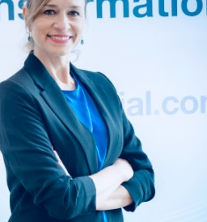

Visión estratégica y de negocio
Identifico oportunidades y desarrollo iniciativas alineadas con los objetivos comerciales de la compañía.
Firma electrónica · Identidad digital · Partners
Channel Partner Manager
Más de 10 años liderando iniciativas de transformación digital, ayudando a las empresas a optimizar sus procesos mediante soluciones avanzadas de firma electrónica e identidad digital.

Sobre mí
Con más de 10 años de experiencia, lidero iniciativas de transformación digital ayudando a empresas a optimizar sus procesos mediante soluciones avanzadas de firma electrónica e identidad digital. Trabajo de forma cercana con partners estratégicos para diseñar e implementar soluciones adaptadas a cada sector, generando valor tangible en industrias como banca, telecomunicaciones, utilities y seguros.
A lo largo de mi trayectoria he desarrollado una sólida capacidad estratégica y excelentes habilidades de negociación, lo que me ha permitido fortalecer relaciones clave y alcanzar resultados sostenibles. Me apasiona la innovación, la colaboración y el trabajo transversal, apoyando a los equipos en la consecución de objetivos comerciales y asegurando el éxito y la rentabilidad de nuestras iniciativas conjuntas.
En el plano personal, disfruto viajando, practicando deporte y pasando tiempo con mi familia. Me considero una persona sociable, cercana y orientada a las personas, cualidades que refuerzan mi forma de trabajar y construir relaciones profesionales duraderas.
Fortalezas clave
Identifico oportunidades y desarrollo iniciativas alineadas con los objetivos comerciales de la compañía.
Construyo relaciones de confianza y cierro acuerdos beneficiosos para todas las partes.
Gestiono y motivo equipos, fomentando entornos colaborativos y de alto rendimiento.
Abordo situaciones complejas de forma eficaz, con una actitud siempre positiva y constructiva.
Alineo equipos, impulso proyectos y creo entornos de trabajo orientados a la excelencia.
Diseño soluciones a medida que generan valor tangible y experiencias digitales seguras y fluidas.
Sectores
Experiencia
Namirial · Madrid
Desarrollo y gestión de la red de partners estratégicos: diseño e implementación de la estrategia de canal, modelos de colaboración y revenue sharing, y medición del desempeño mediante KPI para impulsar el negocio y la presencia en el mercado.
Camerfirma · Grupo InfoCert
Gestión del canal a través de partners e integradores en banca, telco, seguros e inmobiliario, con soluciones de firma electrónica, video-identificación y certificados en la nube. Desarrollo de negocio en México y Colombia, y asesoramiento jurídico en la negociación de acuerdos.
Grupo MailComms
Formación, motivación y cohesión de los equipos de ventas, con sistemas de incentivos y estandarización de procesos. Gestión de cuentas en banca, seguros y utilities (BBVA, Bankinter, Liberbank, Sanitas, Axpo, entre otras) y elaboración de ofertas técnicas en RFP y licitaciones.
Lleida.net
Gestión de cartera de clientes estratégicos en banca y seguros, seguimiento de proyectos de firma electrónica, captación de nuevas cuentas y liderazgo del equipo de Delivery y Tecnología.
Masprevención
Gestión de cuentas clave, alianzas estratégicas, atención personalizada y análisis de oportunidades comerciales.
Quirón Prevención
Definición y seguimiento del plan estratégico de ventas, desarrollo de producto y benchmarking, dirección del área de Administración Pública (licitaciones) y responsabilidad de marketing e imagen de marca.
Fraternidad-Muprespa
Gestión estratégica de la cartera de empresas asociadas, impulso continuo de la calidad del servicio y fortalecimiento de relaciones a largo plazo.
Logros destacados
+50%
Diseñé y ejecuté la estrategia de canal —con portal exclusivo y herramientas de desarrollo— impulsando un crecimiento considerable de la cartera de partners.
Jurídico + técnico
Aporté conocimiento jurídico y técnico en reuniones comerciales, facilitando la toma de decisiones y reforzando la propuesta de valor ante clientes y partners.
Pipeline
Diseñé e implementé campañas de captación que contribuyeron a la creación de nuevos prospectos y al crecimiento del pipeline comercial.
Ponente
Participé como ponente en diversos eventos, compartiendo experiencia y posicionando a la compañía como referente en firma e identidad digital.
Formación
ESIC Business & Marketing School
Instituto Madrileño de Formación
Universidad Complutense de Madrid
Habilidades
Contacto
Abierta a nuevas oportunidades, colaboraciones y proyectos en el ámbito de la firma electrónica, la identidad digital y el desarrollo comercial.